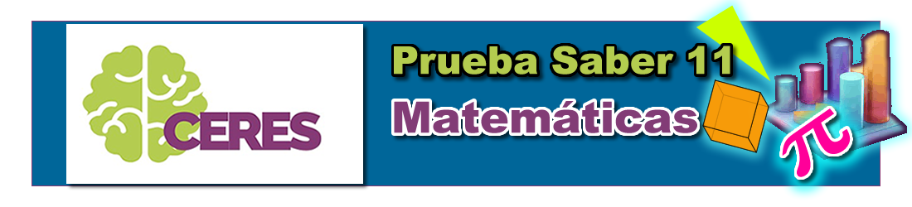

Documentos de apoyo
Documento de repaso sobre operaciones
Documento de repaso sobre porcentajes
Sesión 2 - 18 de marzo de 2025
Ejercicios de repaso de términos estadísticos básicos - Versión 1
Ejercicios de repaso de términos estadísticos básicos - Versión 2